Round Icons
Graphic Design
Здраве и фирнес
Здравословно хранене, редовен спорт и качествена почивка са рецептите за крепко здраве и добър външен вид. А постигането им става още по-лесно с технологичните помощници, които сме събрали в тази категория. Залагаме на идея¬та, че е време да излезете от вкъщи и да се раздвижите, за да изпитате пълната наслада от деня. 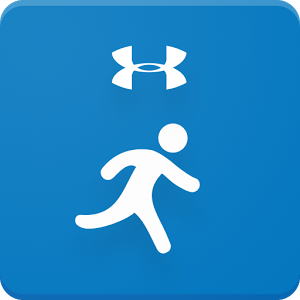Run with Map My Run (Android, iOS)
От MapMyFitness, Inc.
Map My Run – GPS тичане, джогинг, ходене, тренировка и броене на калории. Присъединете се към MapMyRun общността с над 600 различни видове тренировки. Записвайте GPS-базирани дейности и вижте подробна статистика за тях. Свържете се с 400+ устройства, за да записвате и анализирате всички данни на едно място. Налично е и Android Wear приложение, което ви позволява да проследявате и да държите под око вашия напредък от китката си.
Цена: Безплатно (Предлага покупки в приложението)
Изтегли приложението от Google Play Store, App Store
Харесай Добави в любими
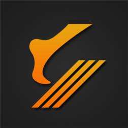
FooTPATH (Windows)
От Vinod Kumar J
FooTPATH е крачкомер, който ви позволява да се конкурирате със света. Всяка стъпка се брои и всяка разходка е състезание във виртуалната общност на приложението. Активната конкуренция мотивира да ходите повече и повече и повече, за да станете по-здрави и по стегнати от всякога.
Цена: Безплатно
Изтегли приложението от Windows Store
Харесай Добави в любими
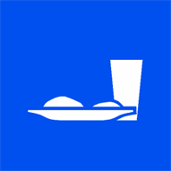
Хранителен дневник: проследяване на вашата диета и калории (Windows))
От My Daily Bits
Проследяването на това, което ядете, доказано може да предотврати прекомерното хранене. Това приложение ви помага да контролирате вашата диета и да ядете по-здравословно. Дизайнът е оптимизиран, за да правите записи възможно най-бързо - с един клик може да направите запис, а системата да ви покаже последните хранителни предложения. Вградената база данни вече съдържа хиляди хранителни продукти и ако вашите не са споменати, добавянето им става лесно и бързо. Това приложение е безплатно за изтегляне и е подкрепено от реклами. Можете да го използвате безплатно за неограничен период от време. Имате възможност да премахнете рекламите срещу такса, която ще ви позволи да използвате допълнителни функции.
Цена: Безплатно
Изтегли приложението от Windows Store
Харесай Добави в любими
Runtastic Leg Workout Trainer (Android, iOS)
От Runtastic
Укрепете краката си с Runtastic Leg Trainer, приложението за бързи и лесни тренировки. Виртуалният Runtastic треньор ще ви води през лесни за следване упражнения в HD клипове, за да тренирате вашите крака. Бъдете активни и направете крачка към мечтаното тяло. Тренировките са съобразени с вашите индивидуални нужди и фитнес ниво. Тренирайте когато и където искате. Насладете се на гъвкавостта на Runtastic Leg Trainer и укрепвайте краката си всеки ден и навсякъде. Едно нещо е сигурно: клековете са жизненоважни, но има още много ходове, които можете да направите, за да тонизирате краката си.
Цена: Безплатно (Предлага покупки в приложението)
Изтегли приложението от >Google Play Store, App Store
Харесай Добави в любими
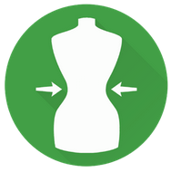
BMI Калкулатор - Идеално тегло (Android)
От Appovo
Това приложение е безплатна BMI и WHtR калкулатор. С него можете да изчислите вашия индекс на телесна маса, за да разберете кое е идеалното ви тегло въз основа на възрастта и пола ви. BMI калкулатор е подходящо и за деца и за възрастни.
Цена: Безплатно (Предлага покупки в приложението)
Изтегли приложението от Google Play Store
Харесай Добави в любими
Tasty Health (iOS)
От Marcus Norling
Tasty Health ще донесе вкусни и здравословни рецепти във вашия iPad и iPhone. В приложението ще намерите разнообразие от вкусни рецепти, всички с ниско съдържание на захар и с високо съдържание на протеин, което ги прави идеални за здравословен и балансиран начин на живот. Всяка рецепта ще ви показва количеството въглехидрати, мазнини и протеини в грамове, както и количеството калории на порция. Самите рецепти са създадени от Сузана, фитнес диетолог от Швеция.
Цена: Безплатно (Предлага покупки в приложението)
Изтегли приложението от App Store
Харесай Добави в любими
PAUSE - Relaxation at your fingertip (iOS)
От ustwo
Въз основа на древните принципи на тай чи PAUSE носи акта на фокусирано внимание на вашето мобилно устройство. С помощта на специална патентована техника и уникален подход към съвременните технологии можете лесно да започнете своята релаксация - навсякъде и по всяко време. Бавно и непрекъснато движете пръста си по екрана и PAUSE ще ви помогне да си възвърнете фокуса и да се освободите от стреса в рамките на минути. Успокояващата аудио-визуална обратна връзка в приложението е предназначена да задържи вашето внимание, за да се съсредоточите в настоящия момент.
Цена: Безплатно (Предлага покупки в приложението)
Изтегли приложението от App Store
Харесай Добави в любими
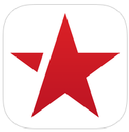
FitStar Personal Trainer (IOS)
От FitStar Inc.
FitStar иска да премахне нуждата от личен треньор, особено за хората, които се притесняват от всички очи във фитнес залата. Подробни видеа и информация за всяко упражнение гарантират, че заниманията ви ще са безопасни и с положителни резултати. Premium планът дава достъп до разнообразни тренировъчни програми.
Цена: Безплатно (Предлага покупки в приложението)
Изтегли приложението от App Store
Харесай Добави в любими
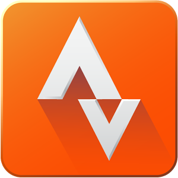
Strava (IOS, Android)
От Strava Inc.
Strava e лесен начин да намерите добри маршрути за колоездене и тичане в цял свят. Самото приложение може и да засича активностите ви, като дава информация за скорост, време и изразходена енергия. Можете и да се състезавате с приятели и непознати.
Безплатно (Предлага покупки в приложението
Изтегли приложението от Google Play Store, App Store
Харесай Добави в любими
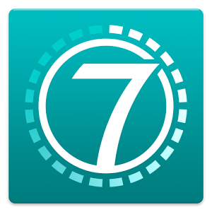
7 Minute Workout "Seven" (Android, IOS, WP)
От Perigee AB
Едно от най-честите оправдания на хората, които не спортуват, е липсата на време. Ако сте от тях, това приложение ще ви помогне. Тук имате високоинтензивна тренировка, която продължава малко над 7 минути, а ако проявите постоянство, получавате и награди.
Цена: Безплатно (Предлага покупки в приложението)
Изтегли приложението от Google Play Store, App Store, Windows Store
Харесай Добави в любими
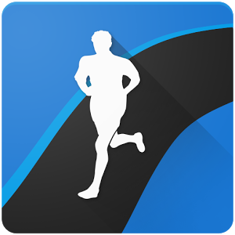
Runtastic (Android, IOS, WP)
От Runtastic
Най-популярното и обичано приложение, с което да засича- те тичане, колоездене, ходене и други фитнес активности. Приложението има изключи- телно богати възможности за измерване на разнообразни типове статистики, които се запазват в личен дневник на тренировките ви. Споделете тичането си с приятели, които могат да ви подкрепят през приложението.
Цена: Безплатно (Предлага покупки в приложението)
Изтегли приложението от Google Play Store, App Store, Windows Store
Харесай Добави в любими
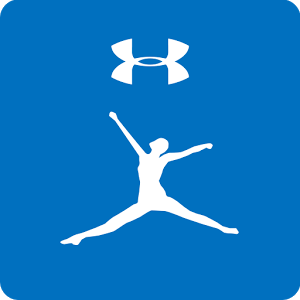
MyFitnessPal (Android, IOS, WP)
MyFitnessPal Inc.
Както подсказва и името на приложението, това е вашият най-добър фитнес приятел. MyFitnessPal дава възможност да отбелязвате храните и напитките, които консумирате, с което получавате пълен контрол над хранителния си режим. Приложението има най-богата база данни с храни от цял свят, включително България.
Цена: Безплатно (Предлага покупки в приложението)
Изтегли приложението от Google Play Store, App Store, Windows Store
Харесай Добави в любими
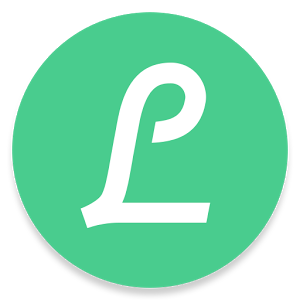
Lifesum (Android, IOS)
От Lifesum
Освен че следите приетите храни и напитки, с Lifesum имате и бързи и кратки съвети за по-добро хранене. Най-ценното обаче идва с Gold абонамента, който дава достъп до няколко диети, с които можете да постигнете разнообразни цели за храненето си.
Цена: Безплатно (Предлага покупки в приложението)
Изтегли приложението от App Store, Google Play Store
Харесай Добави в любими
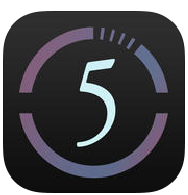
Hot5(R) by Weight Watchers (IOS)
By Hot5, Inc.
Ако имате извънредно натоварен ден, но все пак не искате да изпускате тренировката си Hot5 Fitness ще ви помогне. Приложението дава достъп до кратки, високоинтензивни тренировки, които да компенсират пропуснатия ден във фитнеса.
Цена: Безплатно
Изтегли приложението от App Store
Харесай Добави в любими
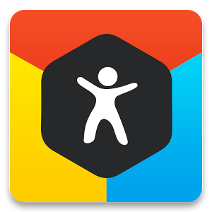
Argus (Android, IOS)
От Azumio Inc.
Едно от най-удобните приложения, които събират всички данни от Health и други спортни приложения на едно място. Освен добре визуализирани данни, Argus има и приятни за използване социални функции, включително и възможност да се „състезавате“ с приятели.
Цена: Безплатно (Предлага покупки в приложението)
Изтегли приложението от App Store, Google Play Store
Харесай Добави в любими
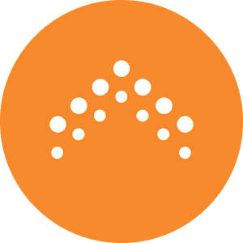
Pact: Earn Cash for Exercise, Healthy Living, and Eating Right (Android, IOS)
От GymPact
Задайте седмичните си спортни цели и сума, която ще загубите, ако не ги изпълните. Ако обаче успеете, ще спечелите пари от други потребители, провалили се в начинанието си. Целта ви може да е посещение във фитнеса, изпълнени тренировки и др.
Цена: Безплатно (Предлага покупки в приложението)
Изтегли приложението от Google Play Store, App Store
Харесай Добави в любими
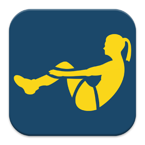
8 Minute Abs (Android, IOS)
От Passion4Profession Apps
Първият пример, който получавате за слабата си форма и занемаряването на тялото, са мазнините на корема. С това приложение ще получите най-добрите предложения как да ги разкарате и в същото време да стегнете мускулите си. В спорта и здравословното пречистване най-важно е движението, затова разработчиците Passion4Proffesion са изготвили упражнения, които не са типичните коремни преси и работят и за правилното движение по време на тренировка, за да избегнете травми. Има програми както за мъже, така и за жени.
Цена: Безплатно (Предлага покупки в приложението)
Изтегли приложението от App Store, Google Play Store
Харесай Добави в любими
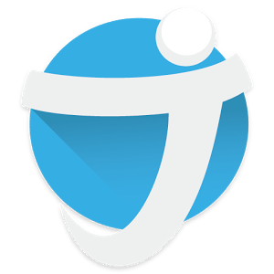
JEFIT (Android, IOS)
От JEFIT Inc.
През зимата е твърде рано, за да залагате на спортуването на открито поради твърде студения въздух в планината и завишените нива на вредните съставки в градския такъв. Поради това правилното решение за спорт през студените месеци е във фитнеса. И за да сте винаги наясно със състоянието си, JEFIT ви предлага да си водите статистика с всички упражнения. Въвеждате всевъзможни цифри – тежести, повторения, време на конкретния уред. Разбира се, има съвети и програми, но уменията за поддържане на голяма база данни са неповторими.
Цена: Безплатно (Предлага покупки в приложението)
Изтегли приложението от App Store, Google Play Store
Харесай Добави в любими
Noom Coach: Weight Loss Plan (Android, IOS)
Noom Inc.
Правилното хранене и избягването на джънк фууд е ключово, при влизането във форма за сезоните за къси и леки дрехи. При първото стартиране Noom ви задава няколко въпроса, с които приложението да изгради представа що за живот водите и от какъв тип храни имате най-често нужда. Впечатляващо е колко добре работи и каква точна преценка има. След това си въвеждате ястията и на няколко дни получавате оценка как се справяте. За успешната работа на Noom Weight Loss Coach е ключово да сте постоянни и дисциплинирани.
Цена: Безплатно (Предлага покупки в приложението)
Изтегли приложението от App Store, Google Play Store
Харесай Добави в любими
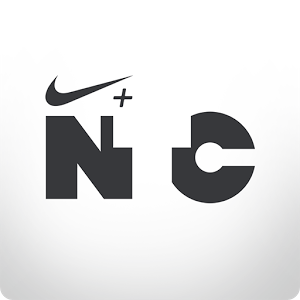
Nike Training Club (Android, IOS)
От NIKE Inc.
Отдавна минаха годините, в които гигантът Nike правеше маратонки и други спортни артикули. Сега те са технологично насочен гигант, който използва ключовата комбинация мобилност + стил. Приложението с женска насоченост дава видеосъвети за упражнения в ежедневието, разработени от най-добрите спортисти в света. Тенисистката Мария Шарапова, футболистката Хоуп Соло, олимпийската шампионка по лека атлетика Алисън Феликс и др. ще ви покажат как да тренирате, за да сте във форма като тяхната.
Цена: Безплатно
Изтегли приложението от Google Play Store, App Store
Харесай Добави в любими
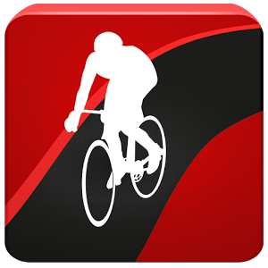
Runtastic Road Bike Tracker (Android, IOS)
От Runtastic
Ако сте привърженици на страхотното чувство да сте едно с пътя и околната среда, докато карате велосипед, то това приложение на Runtastic е правилният избор. Нищо не сваля по-добре калории и мазнини от въртенето на педали с часове в паркове, градини, улици и крайградски пътища. Най-доброто приложение за веломаниаците позволява GPS запис на маршрут и подробна информация за скорост, денивелация, време на обиколка. Получавате чудесни графики и достъп до музиката ви, за да контролирате изцяло мобилното си преживяване.
Цена: Безплатно
Изтегли приложението от Google Play Store, App Store
Харесай Добави в любими
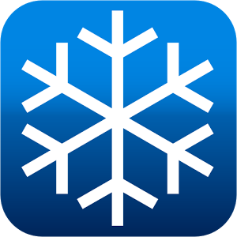
Ski Tracks (Android, IOS)
От Core Coders Ltd
Neybers е нов и лесен начин да си играете с интериорния дизайн. Независимо дали искате да създадете дом мечта, фотосесия за списание, или искате да разкажете една история, Neybers ви дава възможност да украсявате стаите с помощта на широка гама от модерни и стилни продукти от реални търговски марки и дизайнери.
Цена: $0.99
Изтегли приложението от Google Play Store, App Store
Харесай Добави в любими
Relax M Meditation: Sleep Yoga (Android)
От Ipnos Software
Relax M Meditation: Sleep Yoga е идеален помощник за създаване на атмосфера на релаксация и медитация, независимо от мястото или времето! С помощта на дзен звуци, включително течаща вода, птици в гората, или океански вълни, ще постигнете състояние на душевен мир. Перфектен начин за освобождаване на напрежението, докато ви масажират или докато правите йога сесията си. Освен това, Relax M Meditation: Sleep Yoga ще ви помогне да заспите по-приятно. Звуците са специално проектирани, за да се преодолее безсънието. Те осигуряват състояние на дълбока релаксация на ума. Това го прави идеално за всеки един цикъл на вашия сън. Спането никога не е било по-приятно.
Цена: Безплатно (Предлага покупки в приложението)
Изтегли приложението от Google Play Store
Харесай Добави в любими
- Последно обновени: Февруари 2016
- Категория: Приложения за снимки и фотография